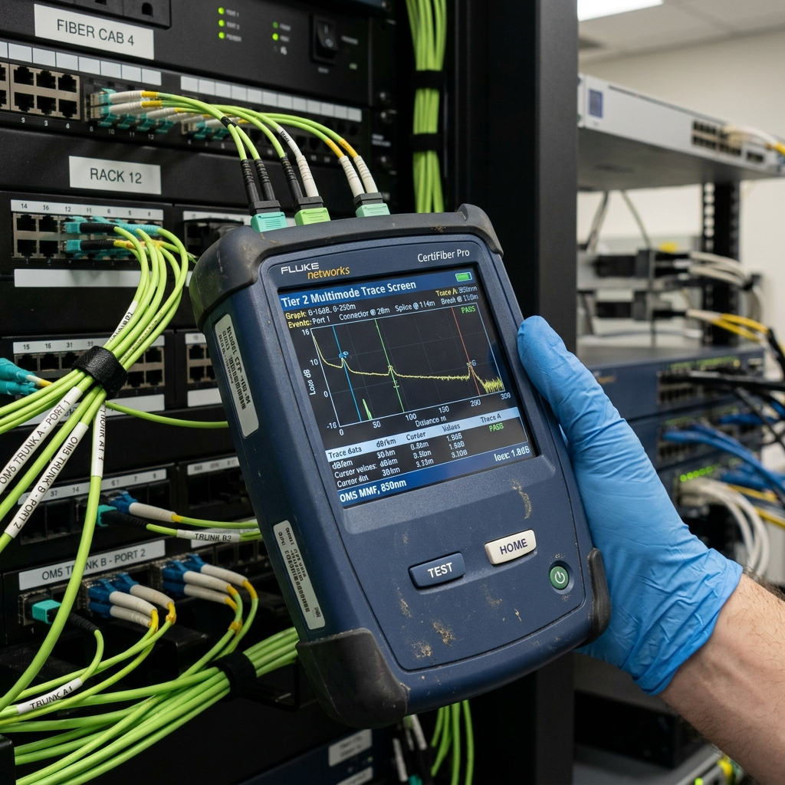

Fiber Optic OTDR Diagnostics: 2026 Fluke CertiFiber & Tier 2 Optical Loss Testing

1. Executive Summary: The Optical Certification Imperative
As enterprise network backbones transition to multi-gigabit architectures—supporting 40GBASE-SR4, 100GBASE-SR10, and emerging 400G optical trunks—the physical tolerances of fiber optic cabling plants have become exceptionally unforgiving. Operating at ultra-high transmission speeds, optical transceivers are highly sensitive to microscopic physical layer impairments. A single contaminated connector end-face, an over-stressed macro-bend in a ceiling tray, or an uncalibrated fusion splice can introduce catastrophic insertion loss and severe optical return loss (reflectance), resulting in massive bit error rate (BER) spikes and continuous packet retransmissions.
Legacy Tier 1 optical testing (utilizing basic Optical Loss Test Sets) is no longer sufficient for certifying mission-critical enterprise fiber networks. While Tier 1 testing confirms total link attenuation, it is completely blind to individual component failures along the run. If a 300-meter fiber link barely passes Tier 1 certification but contains a highly reflective, failing fusion splice hidden inside a wall cavity, network engineers have no diagnostic visibility to locate and remediate the impending point of failure.
```
+------------------------+-----------------------------------+-----------------------------------+
| Diagnostic Parameter | Tier 1 Testing (OLTS Only) | 2026 Tier 2 Testing (OTDR + OLTS) |
+------------------------+-----------------------------------+-----------------------------------+
| Test Equipment | Optical Loss Test Set (Light Meter)| Optical Time Domain Reflectometer |
| Diagnostic Visibility | Total End-to-End Link Loss Only | Granular Event-by-Event Trace |
| Fault Pinpointing | Blind (Cannot locate damage) | Precise Distance Measurement (±1m)|
| Splice / Connector Loss| Estimated / Assumed | Empirically Measured & Characterized|
| Reflectance (ORL) | Unmeasured | Precise Decibel Measurement |
+------------------------+-----------------------------------+-----------------------------------+
```
This comprehensive architectural guide establishes the definitive 2026 engineering standards for Tier 2 fiber optic OTDR diagnostics. Network directors, lead optical engineers, and infrastructure architects will explore the advanced backscatter physics, trace analysis mechanics, and Encircled Flux compliance standards required to certify, troubleshoot, and maintain carrier-grade enterprise optical infrastructure.
2. OTDR Backscatter Physics & Rayleigh Scattering Mechanics
An Optical Time Domain Reflectometer (OTDR) operates on the fundamental principles of optical radar, probing the internal physical microstructure of a fiber optic core to generate a high-resolution, graphical trace map of the entire cabling link.
Rayleigh Scattering & Optical Attenuation
As a high-power laser pulse injected by the OTDR travels down the silica glass core of a fiber optic cable, it encounters microscopic variations in the density and composition of the glass—a natural manufacturing byproduct known as Rayleigh Scattering. These molecular density fluctuations scatter a minuscule fraction of the light energy in all directions. A tiny portion of this scattered light, known as Rayleigh Backscatter, is captured by the fiber core's internal reflection geometry and guided backward toward the OTDR's highly sensitive avalanche photodiode (APD) detector.
```
+-------------------------------------------------------------------+
| OTDR Rayleigh Backscatter & Fresnel Reflection Optical Physics |
+-------------------------------------------------------------------+
| |
| [ OTDR Laser ] ---> [ Pulse ] ---> (===== Fiber Core =====) |
| ^ | | |
| |-------- <--- [ Backscatter ] --| | |
| | | |
| |-------- <--- [ Fresnel Reflection ] --------| |
| (Connector Gap) |
+-------------------------------------------------------------------+
```
By continuously measuring the intensity of the returning backscattered light relative to the exact elapsed time of flight, the OTDR calculates the precise decibel loss (attenuation rate) across every meter of the fiber strand. This empirical measurement generates the continuous, downward-sloping linear baseline seen on a professional OTDR trace screen.
Fresnel Reflection & Optical Return Loss (ORL)
When the traveling laser pulse encounters a sudden, catastrophic change in the refractive index of the transmission medium—such as passing from silica glass (`n = 1.46`) into an open air gap (`n = 1.0`) inside an improperly mated LC connector or a severe mechanical fracture—a significant percentage of the light energy is violently reflected directly back toward the source. This intense optical mirroring is defined as Fresnel Reflection.
```
+------------------------+-----------------------------------+-----------------------------------+
| Optical Event Type | Physical Cause | OTDR Trace Graphical Signature |
+------------------------+-----------------------------------+-----------------------------------+
| Rayleigh Backscatter | Natural Silica Glass Density | Continuous Linear Downward Slope |
| Fusion Splice | Permanent Glass Core Weld | Sharp Vertical Decibel Drop (Loss)|
| Mated Connector | Mechanical Interface / Air Gap | Sharp Reflective Spike + Loss Drop|
| Severe Macro-Bend | Physical Cable Pinch / Tight Bend | Non-Reflective Loss Drop (Wavelength)|
| Fiber End / Fracture | Glass-to-Air Boundary Termination | Massive Reflective Spike + Noise |
+------------------------+-----------------------------------+-----------------------------------+
```
Fresnel reflections appear on an OTDR trace as massive, sharp vertical spikes. In multi-gigabit laser networks, excessive Fresnel reflections are highly destructive. The reflected light energy collides with outgoing optical data symbols, destabilizing the transmitting laser diode and causing severe signal jitter. 2026 enterprise testing standards mandate the rigorous measurement and suppression of Optical Return Loss (ORL), ensuring all connector interfaces maintain reflectance levels below `-45 dB` for multimode and `-55 dB` for singlemode systems.
3. Fluke CertiFiber Pro & Tier 2 OTDR Trace Analysis
Executing carrier-grade Tier 2 optical certification requires deploying elite diagnostic instrumentation, specifically the Fluke Networks OptiFiber Pro or CertiFiber Pro series equipped with advanced Quad OTDR modules.
```
+-------------------------------------------------------------------+
| Professional Fluke Quad OTDR Tier 2 Certification Trace Screen |
+-------------------------------------------------------------------+
| dB |
| ^ [Launch Spike] |
| | | |
| | | (Linear Backscatter Slope) |
| | +---------------\ |
| | \ [Fusion Splice: -0.01dB] |
| | +-----------------\ |
| | \ [Connector Spike] |
| | +---^------------\ |
| | | \ |
| +-----------------------------------------------+--------------->|
| 0m 150m 300m Distance
+-----------------------------------------------+-------------------+
```
Eliminating OTDR Dead Zones via Launch & Receive Cords
A fundamental limitation of all OTDR instrumentation is the presence of "Dead Zones." When the OTDR injects a powerful laser pulse into the front panel connector, the resulting massive Fresnel reflection temporarily blinds the internal APD detector. During this recovery time, the OTDR is completely incapable of detecting or measuring close-in optical events—a phenomenon known as an Event Dead Zone (typically 0.5m to 1m) and Attenuation Dead Zone (typically 2m to 4m).
To eliminate dead zones and certify the first and last connectors of an enterprise fiber link, 2026 testing standards strictly mandate the deployment of calibrated Launch and Receive Cords (tail fibers).
```
+-------------------------------------------------------------------+
| Tier 2 OTDR Bi-Directional Testing Setup with Launch/Receive Cords|
+-------------------------------------------------------------------+
| |
| [ Fluke Quad OTDR ] |
| | |
| ( 150m Launch Cord ) |
| | |
| [ Patch Panel A ] <=== Enterprise Fiber Link ===> [ Patch Panel B]
| | |
| ( 150m Receive ) |
| | |
| [ Tail Endcap ] |
+-------------------------------------------------------------------+
```
The Launch Cord (typically 150 meters of pristine fiber for multimode) is installed between the OTDR port and the primary patch panel (`Patch Panel A`). The Receive Cord is installed at the far end of the link (`Patch Panel B`). This geometric separation forces the initial OTDR blinding reflection to occur entirely within the launch cord, allowing the APD detector to fully stabilize before the laser pulse enters the active enterprise fiber link. This guarantees absolute diagnostic precision when characterizing the insertion loss and reflectance of the initial patch panel keystone interface.
Pinpointing Macro-Bends vs. Fusion Splice Losses
During a complex enterprise fiber audit, technicians frequently encounter sharp decibel drops on the OTDR trace. A critical diagnostic challenge is determining whether the drop is caused by a benign, high-loss fusion splice or a destructive physical macro-bend (e.g., a fiber trunk pinched tightly by a nylon zip tie or bent sharply around a containment tray corner).
```
+------------------------+-----------------------------------+-----------------------------------+
| Diagnostic Wavelength | Fusion Splice Behavior | Macro-Bend Physical Behavior |
+------------------------+-----------------------------------+-----------------------------------+
| Multimode (850nm) | Exhibits Identical Decibel Loss | Exhibits Minor Decibel Loss |
| Multimode (1300nm) | Exhibits Identical Decibel Loss | Exhibits Significantly Higher Loss|
| Singlemode (1310nm) | Exhibits Identical Decibel Loss | Exhibits Minor Decibel Loss |
| Singlemode (1550nm) | Exhibits Identical Decibel Loss | Exhibits Massive Decibel Loss |
+------------------------+-----------------------------------+-----------------------------------+
```
To decisively differentiate between these two events, Fluke Quad OTDRs execute dual-wavelength testing (e.g., testing at `850nm` and `1300nm` simultaneously for multimode).
Because a fusion splice represents a permanent, physical welding of the glass cores, its insertion loss remains constant across all operating wavelengths. Conversely, a macro-bend represents a physical geometric deformation of the core-cladding boundary. Higher wavelengths (such as `1300nm` or `1550nm`) possess larger mode field diameters, making them exceptionally vulnerable to escaping through the cladding when the fiber is bent. If the OTDR trace reveals an event with a `0.1 dB` loss at `850nm` but a massive `1.5 dB` loss at `1300nm`, the engineer instantly diagnoses a physical macro-bend, utilizes the OTDR's precise distance calculation to locate the exact ceiling tray location within `±1 meter`, and physical remediates the pinched cable.
4. Encircled Flux (EF) Compliance & Bi-Directional Testing
Achieving absolute repeatability and legal compliance when certifying enterprise multimode fiber plants requires strictly adhering to international optical launch standards and bi-directional testing disciplines.
```
+------------------------+-----------------------------------+-----------------------------------+
| Testing Discipline | Legacy Uncalibrated Launch | 2026 Encircled Flux (EF) Mandate |
+------------------------+-----------------------------------+-----------------------------------+
| Light Source Launch | Uncontrolled / Overfilled LED | Precision Modal Power Distribution|
| Measurement Variance | Extremely High (Up to 40% error) | Flawless Repeatability (<2% var) |
| Statutory Compliance | Non-Compliant (Fails ISO/TIA) | 100% Compliant (ISO/IEC 14763-3) |
| Testing Directionality | Uni-Directional (Single Shot) | True Bi-Directional Averaging |
+------------------------+-----------------------------------+-----------------------------------+
```
Encircled Flux (EF) Launch Mandate (ISO/IEC 14763-3)
In legacy multimode testing, optical loss measurements varied wildly depending on the specific test equipment utilized. Standard LED light sources produce an "Overfilled Launch," where optical power is pumped aggressively into the outer cladding modes of the fiber. Conversely, laser sources produce an "Underfilled Launch," concentrating power entirely within the absolute center of the core. This lack of launch standardization resulted in up to `40% measurement variance` between different testing crews certifying the exact same fiber strand.
To eliminate this chaos, 2026 enterprise testing standards strictly mandate Encircled Flux (EF) compliance in accordance with ISO/IEC 14763-3 and TIA-526-14-C. Encircled Flux defines the exact, mandatory modal power distribution curve injected into a multimode fiber core. Fluke CertiFiber Pro test sets utilize specialized, EF-compliant optical launch cords equipped with internal mode-conditioning controllers. This precision launch guarantees that optical loss measurements are flawlessly repeatable, legally binding, and court-admissible for corporate warranty claims.
True Bi-Directional OTDR Averaging
When fusion splicing two fiber strands manufactured from different production batches, microscopic variations in the core backscatter coefficients (`Rayleigh scattering density`) frequently occur. When an OTDR tests across a splice where light passes from a high-backscatter fiber into a low-backscatter fiber, the resulting trace exhibits a "Gainer"—an impossible optical anomaly where the splice appears to gain decibel power rather than lose it.
```
+-------------------------------------------------------------------+
| Bi-Directional OTDR Gainer Elimination & Loss Averaging Math |
+-------------------------------------------------------------------+
| |
| Trace A ( `A -> B` ): Splice exhibits apparent "Gainer" (+0.08dB)|
| Trace B ( `B -> A` ): Splice exhibits exaggerated loss (-0.12dB)|
| |
| True Splice Loss = (Trace A Loss + Trace B Loss) / 2 |
| True Splice Loss = (+0.08 dB + -0.12 dB) / 2 = -0.02 dB (PASS) |
+-------------------------------------------------------------------+
```
Conversely, testing the exact same splice in the opposite direction (`B -> A`) produces an exaggerated decibel drop. To calculate the true, physical insertion loss of the fusion splice, 2026 engineering standards mandate True Bi-Directional OTDR Testing. Technicians capture high-resolution traces from both ends of the fiber link (`A -> B` and `B -> A`). Advanced Fluke LinkWare software autonomously merges the two directional traces, executing precise mathematical averaging to eliminate backscatter coefficient mismatches and reveal the true, pristine physical loss of the fusion weld.
5. Comprehensive Expert Frequently Asked Questions
What causes an OTDR "Dead Zone" and how do Launch and Receive Cords eliminate this limitation?
An OTDR Dead Zone is caused by the intense Fresnel reflection generated when the high-power laser pulse enters the front panel connector. This massive burst of reflected light temporarily blinds the OTDR's highly sensitive avalanche photodiode (APD) detector, preventing it from measuring close-in optical events. Calibrated Launch and Receive Cords (typically 150m for multimode) act as optical buffers installed at both ends of the enterprise fiber link. This geometric separation forces the initial blinding reflection to occur entirely within the launch cord, allowing the APD detector to fully recover and stabilize before the laser pulse enters the active enterprise link, ensuring flawless certification of the first and last patch panel connectors.
How does dual-wavelength OTDR testing decisively differentiate between a fusion splice and a macro-bend?
Dual-wavelength OTDR testing (e.g., testing at `850nm` and `1300nm` simultaneously) leverages the physical properties of light propagation across different mode field diameters. Because a fusion splice is a permanent physical weld of the glass cores, its decibel loss remains constant across all operating wavelengths. Conversely, a macro-bend is a physical distortion of the cable geometry. Higher wavelengths (such as `1300nm` or `1550nm`) possess larger mode field diameters, making them exceptionally vulnerable to escaping through the cladding when bent. If the OTDR trace reveals a minor loss at `850nm` but a massive decibel drop at `1300nm`, the engineer instantly identifies a physical macro-bend rather than a fusion splice.
What is Encircled Flux (EF) compliance and why is it mandatory under ISO/IEC 14763-3?
Encircled Flux (EF) is a mandatory international optical launch standard defined under ISO/IEC 14763-3 and TIA-526-14-C that regulates the exact modal power distribution curve injected into a multimode fiber core. Legacy uncalibrated light sources produced unpredictable overfilled or underfilled launches, resulting in up to 40% measurement variance between different testing sets. EF-compliant test equipment (such as the Fluke CertiFiber Pro) utilizes specialized mode-conditioning launch cords to inject a perfectly standardized light profile, guaranteeing that optical loss measurements are flawlessly repeatable, highly accurate, and legally binding for enterprise warranty certification.
Why do OTDR traces occasionally exhibit apparent "Gainers" across fusion splices, and how is the true loss calculated?
An OTDR "Gainer" is an optical anomaly where a fusion splice appears to gain decibel power rather than lose it on the trace screen. This occurs when splicing two fiber strands manufactured from different production batches that possess slightly different internal Rayleigh backscatter coefficients. When the laser pulse passes from a fiber with a high backscatter coefficient into a fiber with a lower coefficient, the sudden increase in captured backscatter tricks the OTDR into displaying a power gain. To calculate the true physical insertion loss of the weld, engineers execute True Bi-Directional Testing, capturing traces from both directions (`A -> B` and `B -> A`) and mathematically averaging the two decibel values to eliminate the backscatter mismatch.
What is the maximum allowable insertion loss for a professional fusion splice under TIA-568.3-D standards?
Under TIA-568.3-D and ISO/IEC 11801 standards, the maximum allowable insertion loss for a single fusion splice is `0.3 dB`. However, in modern 2026 multi-gigabit enterprise deployments (supporting 40Gbps and 100Gbps optical backhauls), optical loss budgets are exceptionally tight. Professional fiber optic contractors utilizing advanced core-alignment fusion splicers strictly enforce an internal engineering quality threshold of `0.02 dB to 0.05 dB` per fusion splice, ensuring maximum optical headroom and pristine signal integrity across the entire cabling plant.